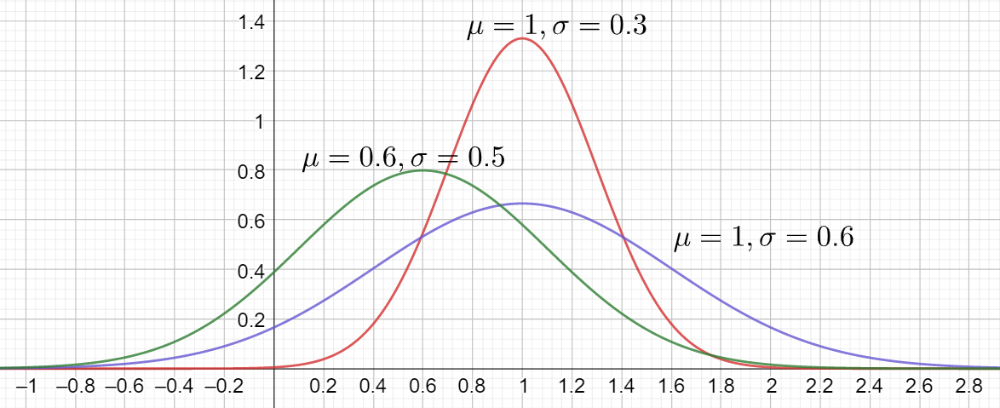
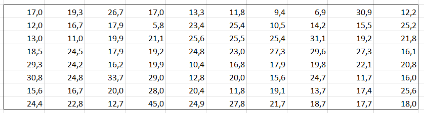

Normaalijakauma
Contents
Normaalijakauma#
Mietitään tilannetta, jossa poimitaan satunnaisesti havaintoarvoja, joiden tarkoituksena on arvioida jonkin ominaisuuden keskimääräistä suuruutta suuressa joukossa. Voitaisiin esimerkiksi pyrkiä selvittämään, mikä on 30-vuotiaiden keskimääräinen pituus, mittaamalla osa kyseiseen ikäluokkaan kuuluvista henkilöistä.
Jotta todellisesta populaatiosta voitaisiin tehdä johtopäätöksiä saatavilla olevan aineiston perusteella, täytyy populaatiosta tehdä seuraavat oletukset:
positiiviset erot keskiarvoon nähden ovat yhtä todennäköisiä kuin negatiiviset erot
suuret erot ovat vähemmän todennäköisiä kuin pienet erot,
havaintoarvojen keskiarvo on todennäköisin alkuperäisen joukon kyseisen ominaisuuden keskiarvo
Näillä oletuksilla havaintoarvojen jakauma on symmetrinen, jolloin keskiarvo, mediaani ja moodi ovat yhtä suuret. 1800-luvulla C. F. Gauss esitteli normaalijakauman tiheysfunktion, joka sopii yllämainittuihin ehtoihin.
Tiheysfunktio ja kertymäfunktio#
Normaalijakauman tiheysfunktio määritellään sen keskiarvon ja keskihajonnan avulla. Kun satunnaismuuttuja \(X\) noudattaa normaalijakaumaa, jonka keskiarvo on \(\mu\) ja keskihajonta \(\sigma\), merkitään \(X \sim N(\mu,\sigma)\).
Tiheysfunktion matemaattinen muoto on
\(p(x)=\frac{1}{\sigma \sqrt{2\pi}} e^{-\frac{1}{2} \left(\frac{x-\mu}{\sigma}\right)^2}\).
Oheisessa kuvaajassa on normaalijakaumia, joilla on eri keskiarvot ja keskihajonnat.

Kertymäfunktion arvo lasketaan aina tietokoneella. Sitä ei edes pysty laskemaan kynällä ja paperilla. Excelissä käytetään funktiota NORMAALI.JAKAUMA.
Esim. Jatkuva satunnaismuuttuja noudattaa normaalijakaumaa, jonka keskiarvo on 12 ja keskihajonta 0.6. Siis X ~N(12,0.6). Laske todennäköisyydet:
a) \(P(x < 13.5)\), b) \(P(x > 11.2)\), c) \(P(11.9 < x < 14.8)\).
Ratkaisu
Aluksi merkitään: \(F(x)\) on kertymäfunktio normaalijakaumalle \(N(12,0.6)\).
a) \(P(x < 13.5) = F(13.5)\) eli “pinta-ala vasemmalta arvoon 13.5 asti”
Excel: NORMAALI.JAKAUMA(13,5;12;0,6;1), vastaus 0.994
b) \(P(x>11.2) = 1 - P(x\leq 11.2)= 1 - F(11.2)\) eli “pinta-ala arvosta 11.2 oikealle”
Excel: 1-NORMAALI.JAKAUMA(11,2;12;0,6;1), vastaus 0.909
c) \(P(11.9 < x < 14.8) = F(14.8)- F(11.9)\) eli “pinta-ala arvojen 11.9 ja 14.8 välillä”
Excel: NORMAALI.JAKAUMA(14,8;12;0,6;1)-NORMAALI.JAKAUMA(11,9;12;0,6;1), vastaus 0.566
Esim. Tehtaassa valmistettavien kilon jauhopussien painon keskiarvo oli 996 g ja vastaava keskihajonta 6.59 g. Kuinka monta prosenttia jauhopusseista oli painoltaan vähintään 995 g?
Ratkaisu
\(P(\text{"satunnainen pussi väh. 995 g"})= P (X \geq 995)=1-P(X\leq 995)=1-F(995)\)
Excel: 1-NORMAALI.JAKAUMA(995;996;6,59;1), vastaus 0.5605 eli 56 %
Käänteinen normaalijakauma#
Usein normaalijakauman funktioita käytetään käänteisesti. Normaalijakaman käänteisfunktio muuttujan arvolla \(a\) etsii satunnaismuuttujan \(X\) sen arvon \(x\), jolla toteutuu \(P(X \leq x)=a\). Jos taas halutaan laskea todennäköisyyttä sille, että muuttujan arvo on enemmän kuin jokin tietty luku, käytetään jälleen komplementtiperiaatetta.
Excelissä tarvittava funktio on NORMAALI.JAKAUMA.KÄÄNT, jolle annetaan parametriksi kysytty todennäköisyys tai osuus desimaalilukuna tai prosentteina sekä jakauman keskiarvo ja keskihajonta.
Esim. Tehtaassa valmistettavien jauhopussien painon keskiarvo oli 996 g ja vastaava keskihajonta 6.59 g. Minkä painorajan yläpuolella on 99.5 % myynnissä olevista pusseista?
Ratkaisu
On etsittävä paino \(x\) siten, että \(P(X>x) = 0.995\) eli komplementtiperiaatteen nojalla \(P(X<x) = 0.005\).
Excel: NORMAALI.JAKAUMA.KÄÄNT(0,005;996;6,59), vastaus 979 g
Esim. Suomen miespuolisen väestön keskipituus on 180.7 cm ja keskihajonta 7.4. cm. Oletetaan, että pituus noudattaa normaalijakaumaa.
a) Mikä on todennäköisyys sille, että mieshenkilön pituus on vähintään 213 cm?
b) Mikä on se pituus, jonka pituisia tai lyhyempiä on 90 % miehistä?
c) Millä todennäköisyydellä mieshenkilön pituus on välillä 190 cm … 200 cm?
Ratkaisu
a) \(P(X \geq 213)= 1-P(X<213)=1-F(213)\)
Excel: =1-NORMAALI.JAKAUMA (213;180,7;7,4;1), vastaus 0.00000636 (noin 6 miestä miljoonasta)
b) \(P(X\leq x)=F(X)=0.90\)
Excel: NORMAALI.JAKAUMA.KÄÄNT(0.9;180,7;7,4), vastaus 190.2 cm
c) \(P(190≤X≤200)=F(200)-F(190)\)
Excel: NORMAALI.JAKAUMA(200;180,7;7,4;1)-NORMAALI.JAKAUMA(190;180,7;7,4;1), vastaus 10 %
Noudattaako aineisto normaalijakaumaa?#
Jos aineisto ei noudata normaalijakaumaa, niin ei voida käyttää normaalijakaumaan liittyviä funktioita. Muuttujan arvo, joka vastaa haluttua prosenttilukemaa, pitää tällöin etsiä PROSENTTIPISTE-funktiolla, jota on käsitelty jo aiemmin.
Esim. Eräs sepelimurske on kelvollista käyttötarkoitukseensa, jos enintään 2.5 % sen kivistä ylittää maksimiläpimitaltaan arvon 30 mm. Alla olevassa taulukossa on satunnaisesti valittujen 80 kivenkappaleen maksimiläpimitat työntömitalla mitattuna. Täyttääkö murske laatukriteerin? Ratkaise tehtävä kahdella tavalla:
a) Oletetaan, että kyseisen murskeen kivien läpimitat noudattavat normaalijakaumaa.
b) Oletetaan, että kyseisen murskeen kivien läpimitat eivät noudata normaalijakaumaa.

Ratkaisu
Lasketaan aineistosta Excelin funktioilla keskiarvo, joka on 20.13 mm, ja keskihajonta, joka on 6.75 mm. Etsitään käänteisen normaalijakauman arvolla arvo, jota pienempiä 97.5 % kivistä on (tätä suurempia on tällöin tietenkin 2.5 % kivistä).
NORMAALI.JAKAUMA.KÄÄNT(97,5%;20,13;6,75), vastaus 33.4 mm
Tässä tapauksessa kannattaa hyödyntää normaalijakaumaa, sillä tiedetään, että taulukko on edustava otos normaalijakaumaa noudattavasta populaatiosta. Jos käytetään prosenttipiste-funktiota, saadaan tulokseksi 31.2 mm. Pelkästään aineiston perusteella laskettu prosenttipiste antaa murskeesta paremman vaikutelman kuin normaalijakauman käyttö.
Normitettu normaalijakauma#
Normaalijakaumiin liittyvät todennäköisyydet voidaan standardoida niin, että yksi ainoa jakauma eli normitettu normaalijakauma \(N(0,1)\) riittää. Aikaisemmin tämä oli tärkeää, koska laskuja ei suoritettu tietokoneella vaan paperisten taulukoiden avulla, ja vain tämän jakauman arvot oli taulukoista luettavissa. Edelleen kuitenkin normitettu jakauma on tärkeä mm. kun halutaan verrata toisiinsa sellaisia havaintoarvoja, jotka kuuluvat täysin eri jakaumiin.
Satunnaismuuttujalle \(X \sim N(\mu, \sigma)\) normeeraus normaalijakaumaan \(N(0,1)\) tehdään seuraavasti:
jos \(X \sim N(\mu, \sigma)\) niin \(z=\frac{x-\mu}{\sigma}\sim N(0,1)\)
Tiheysfunktio on tällöin \(e^{-\frac{1}{2} z^2}\)
Esim. Matin pisteluku testissä, jossa keskiarvo oli 23.4 p ja keskihajonta 6.5 p, oli 33 p. Kallen pisteluku toisessa testissä, jossa keskiarvo oli 125.5 p ja keskihajonta 29.5 p, oli 171 p. Kumman pisteluku oli korkeampi suhteessa muihin testin osanottajiin, kun pisteet molemmissa testeissä olivat normaalisti jakautuneet?
Ratkaisu
Matti: \(z=\frac{33-23.4}{6.5}=1.48\), Kalle: \(z=\frac{171-125.5}{29.5}=1.54\).
Kalle suoriutui siis paremmin verrattuna muihin testin osallistujiin kuin Matti.
Binomijakaumasta normaalijakaumaksi#
Kun binomijakaumassa \(\text{Bin}(n,p)\) toistokertojen lukumäärä \(n\) on riittävän suuri ja tarkasteltavan tapahtuman todennäköisyys \(p\) pieni, voidaan diskreettiä binomijakaumaa approksimoida jatkuvalla normaalijakaumalla \(N(\mu,\sigma)\), missä \(\mu=np\) ja \(\sigma=\sqrt{np(1-p)}\).
Satunnaisesti valitulle ihmisjoukolle esitetty kysymys, johon on kaksi vaihtoehtoa – vaikkapa “kyllä” tai “ei” – on esimerkki tällaisesta tilanteesta. Tutkitulle joukolle voidaan laskea “kyllä” -vastauksien osuus prosentteina. Tämän jälkeen voidaan soveltaa normaalijakaumaa sen selvittämiseksi, millä todennäköisyydellä koko populaation “kyllä” -vastauksien osuus on tietyn virherajan sisällä tutkitun joukon “kyllä” -vastauksien osuudesta. Tähän liittyy luottamusvälin käsite, johon perehdytään myöhemmin.